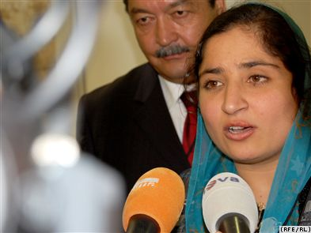

پذيرش > سایت نوشته ها > کارنامه تلاشهای زنان فعال و برابریخواه افغان
 گفت و گو با انارکلی هنريار، عضو دفتر مستقل حقوق بشر افغانستان گفت و گو با انارکلی هنريار، عضو دفتر مستقل حقوق بشر افغانستان

 کارنامه تلاشهای زنان فعال و برابریخواه افغان کارنامه تلاشهای زنان فعال و برابریخواه افغان
7 خرداد 1388 - رادیو فردا - نسخه قابل چاپ
راديو اروپای آزاد به تازگی میهمان ويژهای داشت: انارکلی هنريار، عضو «دفتر مستقل حقوق بشر افغانستان»، دختر جوان ۲۵ سالهای است که از شش سال پيش فعاليت سياسی خود را برای احقاق حقوق زنان در کابل آغاز کرد.
اولين بار او را جامعه اقليت سيکهای کابل بهعنوان نماينده خود در لويه جرگه قانون اساسی افغانستان انتخاب کردند. پس از آن، او که دکترای دندانپزشکی خود را در کابل میگذراند، احقاق حقوق زنان افغانستان را هدف اصلی خود در زندگی قرار داده است.
خانم هنريار در پاسخ به پرسش راديو فردا درباره وضعيت کلی زنان افغانستان میگويد: «وضعيت زنان افغانستان را اگر از نگاه کار و تحصيل ببينيم، کلاً در شهرهای بزرگ دسترسی به امکانات و شرايط مساعد دارند و در نقاط دور دست مشکلات امنيتی دارند. مسئله هميشگی در مورد زنها اين است که ما آسيبپذيرترين بخش از جامعه هستيم در هر کشوری که زندگی کنيم. به اين خاطر مشکلات امنيتی بيشتر ما را تهديد میکند. شايد در افغانستان پایين بودن بیسوادی و سطح آگاهی مردم بر مشکلات افزوده است و اين به خاطر پایين بودن سطح آگاهی و ۳۰ سال جنگ در افغانستان است که در همه عرصههای زندگی به مردم صدمه زده است.»
آيا آماری داريد که بگويد چند درصد از زنان افعانستان باسوادند؟
انارکلی هنريار: در اين مورد تحقيقی انجام نشده. ولی سال به سال اين مسئله بهتر شده است؛ با وجودی که در بعضی نقاط مشکلات امنيتی بسيار باعث شده که مدارس دخترانه را ببندند.
وضعيت زنان افغانستان برای ورود به دانشگاه چطور است؟
زنان افغان میتوانند در ارتش ملی يا پليس فعاليت کنند. زن میتواند دکتر، مهندس شود. ولی باور من اين است که ذهنيت مردم طوری است که در گذشتهها اينطور بود که زن بايد وظيفهای را انجام دهد. مثلاً اشکالی ندارد که معلم شود، مدرسه برود ولی ديگر در مسائل اجتماعی سهيم نباشد.
مطابق ماده ۲۲ قانون اساسی افغانستان زنان با مردان حقوق مساوی دارند. البته از نگاه ابتر حقوق بشری ولی متأسفانه ازدواج بيشتر دختران افغان قبل از وقت انجام میگيرد که مانع تحصيلشان میشود. قبل از ازدواج وعدههايی داده میشود که بعد از ازدواج به آنها اجازه درس خواندن میدهند. ولی ازدواج که میکنند بهشان اجازه داده نمیشود.
خانم هنريار میگويد مشکلات امنيتی و مسائل ديگر سبب شده که دخترهای افغان در سنين پابين ازدواج کنند ولی به آنها توصيه میکند که در نکاح نامه خود ضمن شرايط عقد، اجازه ادامه تحصيل را قيد کنند.
وی میگوید: «ازدواج دختران افغان گهگاه در سنين ۱۳ سالگی هم صورت میگيرد. در قانون اساسی اشاره شده است که سن ازدواج برای دختران ۱۶ و برای پسران ۱۸ است. در مواردی که مشکلاتی در اين زمينه پيش میآيد، سازمان حقوق بشر افغانستان کوشش میکند با کمک خانوادهها مشکلات را حل کند. در حال حاضر در افغانستان شماری خانههای امن برای دختران وجود دارد. هدف اين خانهها اين نيست که دختران تشويق شوند از منزل بگريزند. ولی وقتی خانمی منزل را ترک میکند، ضرورت دارد که به او کمک شود».
آيا خانههای امن فقط ويژه دخترانی است که از خانه خارج شدهاند؟ زنانی که مورد خشونت خانگی هم قرار گرفتهاند، میتوانند از اين خانهها استفاده کنند؟
به طور کلی اين خانه ها برای زنانی است که مشکلات حقوقی دارند. خانه های امن آنقدر امکانات ندارند و يک جای دائم نيستند. ولی تا حل مشکلاتشان آنها در اين خانهها نگهداری میشوند.
وضعيت کار پيدا کردن برای زنان افغان چگونه است؟
وضعيت امنيتی در افغانستان در راه کار زنان ايجاد مشکلاتی میکند. مثلاً در بيشتر نقاط دور افتاده به دکتر زنان نياز مبرم وجود دارد. اما شرايط امنيتی سبب شده که زنان نتوانند در نقاط دور دست کار کنند.
خانم هنريار معتقد است به دليل دوران طالبان و ماندگار شدن زنان در خانهها و عدم دسترسی به کار و تعليم، زنان پيشرفت چندانی نکردهاند و از اين رو بايد به آنها اولويت داده شود و از تبعيض مثبت به سود زنان برای ارتقای سطح آگاهی آنها استفاده شود. وی میگويد مشکلات زنان افغان چيزی نيست که در يک سال يا دو سال حل شود.
رویا کریمی
ارسال به
بالاترین
،
توییتر
،
فریندفید
،
فیسبوک
در همين بخش :
 یک خبر تلخ؟ یک قانونشکنی؟ یک تصمیم بخشنامهای جدید؟ یک خبر تلخ؟ یک قانونشکنی؟ یک تصمیم بخشنامهای جدید؟
چرا بایست به سکسوالیته پرداخت؟ / نفیسه آزاد
آزارجنسی خانگی؛ «قربانی» نه، «نجات یافته»
زنان، بزرگترین بازندگان بهار عرب
سانسور از دیدگاه جنسیتی/الهه امانی
ديگر بخش ها :
طرح یک میلیون امضا
|
مقالات
|
سایت نوشته ها
|
اخبار
|
گزارش كمپين
|
گفت و گو
|
علیه سکوت
|
كوچه به كوچه
|
نامه های شما
|
گزارش ویژه
|
گفتگو با اعضا
|
ویژه سالگرد کمپین
|
تصویر برابری
|
دل آرام علی
|
تریبون
|
مقالات
|
تاریخ شفاهی
|
خارج از چارچوب
|
کتابخانه
|
درباره کمپین
|
کمپین در شهرها
|
کمپین در بند
|
صدای تغییر
|
ویژه 22 خرداد
|
لایحه حمایت از خانواده
|
گالری
|
عشا مومنی
|
امیر یعقوبعلی
|
خدیجه مقدم
|
راحله عسگری زاده و نسیم خسروی
|
پروین اردلان،جلوه جواهری، مریم حسین خواه، ناهید کشاورز
|
زینب پیغمبرزاده
|
سعیده امین، سارا ایمانیان، محبوبه حسین زاده، ناهید کشاورز و همایون نامی
|
احترام شادفر
|
نسیم سرابندی زاده،فاطمه دهدشتی
|
وبلاگ مهمان
|
پرونده خرم آباد
|
دستگیری ها
|
مریم مالک
|
پرستو اللهیاری
|
مهرنوش اعتمادی
|
سمیه رشیدی
|
Other Languages
|
همراهان
|
«فراخوان کمپین ده روز با بهاره هدایت»
| English
|